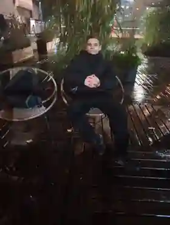

01 / АНАЛИЗ
Кредиты и долговые обязательства
Анализ договоров, расчётов и переписки. Выясняем, из чего состоит задолженность и какие вопросы требуют проверки.
ALLIAM / ЛИЧНЫЙ ПОДХОД
Кредиты, требования взыскателей, сложные договоры? Помогу разобраться в документах, оценить возможные решения и выбрать законный путь действий.
ПРЕЖДЕ ВСЕГО — ЯСНОСТЬ
Никакой универсальной схемы для всех. Сначала факты, документы и цели — затем варианты решения и последовательный план.
ЧЕМ МОГУ ПОМОЧЬ
От первой проверки документов до подготовки обращений — задачи подбираются под конкретные обстоятельства.
Анализ договоров, расчётов и переписки. Выясняем, из чего состоит задолженность и какие вопросы требуют проверки.
Разбираем содержание требований и возможные способы корректного взаимодействия, включая письменные ответы.
Помощь в подготовке заявлений, запросов и других документов с учётом вашей ситуации и применимых правил.
Сравниваем доступные варианты, обозначаем ограничения и риски, составляем реалистичную последовательность действий.
Каждая ситуация индивидуальна. Полное или частичное списание задолженности не гарантируется и зависит от правовых оснований и обстоятельств дела.

ЗНАКОМСТВО / ALLIAMЗА БРЕНДОМ — ЧЕЛОВЕК
Дмитрий Николаевич / ALLIAM
Я считаю, что разговор о долгах должен начинаться не с давления и обещаний, а со спокойного разбора фактов.
Важно услышать вашу историю, понять документы и честно объяснить, какие шаги возможны, а где есть ограничения. Так появляется основа для взвешенного решения.
Моя цель — чтобы после разговора у вас было больше ясности, а не больше тревоги.
ЧЕТЫРЕ ШАГА
Без лишней сложности: понятный маршрут от первого сообщения до конкретных действий.
Кратко описываете вопрос и удобный способ связи.
Уточняем обстоятельства и список нужных документов.
Обсуждаем доступные решения, риски и ограничения.
Определяем последовательность шагов и дальнейший формат помощи.
ВОПРОСЫ И ОТВЕТЫ
Остались вопросы? Напишите, и мы начнём с вашей ситуации.
Задать свой вопросВ отдельных обстоятельствах закон допускает уменьшение или списание некоторых обязательств. Но это зависит от документов, юрисдикции и применимой процедуры. Обещать результат до анализа ситуации неправильно.
Если есть — кредитный договор, расчёт задолженности, сообщения кредитора или взыскателя, платежные документы и судебная корреспонденция. Точный перечень определим после первого обращения.
Да, первоначальный запрос можно оставить через сайт. Формат дальнейшего общения и возможность дистанционного рассмотрения уточняются индивидуально.
Стоимость зависит от объёма документов и конкретной задачи. Условия обсуждаются до начала платной работы — без выдуманных тарифов и скрытых обещаний.
Нет. Сначала нужно понять предмет запроса, применимое законодательство и возможность реально помочь. Если вопрос требует другого профильного специалиста, это следует обсудить отдельно.
СВЯЗЬ / ALLIAM
Опишите ваш вопрос. Для начала достаточно нескольких предложений — без передачи паролей, банковских данных или других секретов.
Ваше обращение передано специалисту.
Для дополнительного общения можно открыть личный чат по ссылке. Не передавайте пароли, коды подтверждения и банковские реквизиты.
Данные передаются по защищённому соединению для рассмотрения вашего обращения. Не указывайте пароли, полные данные карт и другие секреты.